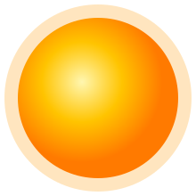

Сонячна система — це Сонце і всі небесні тіла, які обертаються навколо нього: вісім планет, їхні супутники, карликові планети, астероїди та комети. Вона утворилася приблизно 4,6 мільярда років тому з величезної хмари газу й пилу.
Сонце — це зоря, розташована в центрі системи. На нього припадає понад 99 відсотків усієї маси Сонячної системи, тому саме його тяжіння утримує планети на орбітах. Світло від Сонця долітає до Землі приблизно за вісім хвилин.
Планети поділяють на дві групи. Меркурій, Венера, Земля і Марс — це планети земної групи: невеликі й кам'янисті. Юпітер, Сатурн, Уран і Нептун — планети-гіганти, які складаються переважно з газів і льоду.
На цьому сайті можна дізнатися більше про дві найцікавіші для нас планети: Землю, на якій ми живемо, і Марс, куди люди мріють колись полетіти.